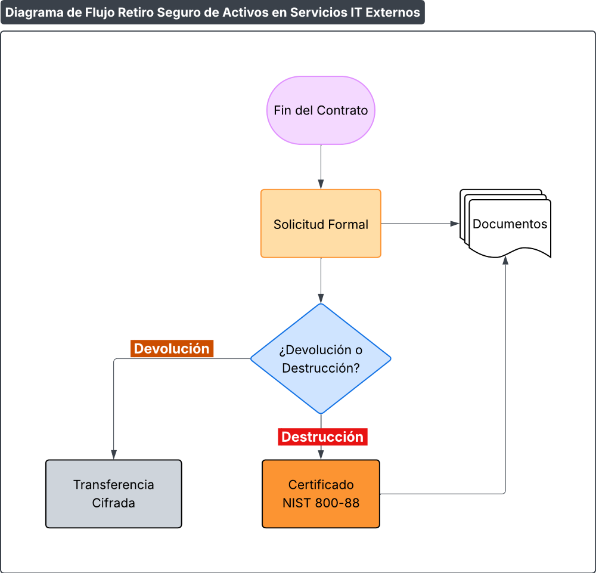

Procedimiento de Devolución y Retiro Seguro de Activos en Servicios IT Externos
Código: P533-IT-1
Última revisión: 1/4/2026
Rev. N°: 1
Cumple: TISAX AL3, ISO 27001:2022
1 OBJETIVO
Garantizar la devolución segura o destrucción controlada de activos de información (datos, credenciales, dispositivos) al finalizar contratos con proveedores externos (ej.: iCloud, outsourcing de IT), previniendo accesos no autorizados o fugas de información. Este procedimiento se alinea con los requisitos de ISO/IEC 27001:2022 y TISAX.
2 INVENTARIO Y CLASIFICACIÓN DE ACTIVOS
A. Alcance:
- Datos, hardware y credenciales en poder de proveedores:
- Cloud: Datos en Cloud, AWS, Azure, Donweb, etc.
- Outsourcing: Servidores físicos en centros de datos externos.
B. Proceso:
1. Identificar activos:
- Listar datos almacenados (ej.: BD en cloud).
- Registrar dispositivos físicos prestados (ej.: HSM en centro de datos).
2. Clasificar por sensibilidad:
- Críticos: Datos de clientes → Eliminación certificada.
- No críticos: Logs anonimizados → Devolución estándar.
C. Documentos de Referencia:
- Inventario actualizable
F533-IT-1 Registro de Activos en Proveedores Externos
3 NEGOCIACIÓN CONTRACTUAL INICIAL
A. Alcance:
- Contratos con proveedores de IT externos.
B. Proceso:
1. Incluir cláusulas de retiro:
- Derecho a auditoría de eliminación de datos.
- Plazos máximos para devolución (ej.: 15 días post-terminación).
2. Especificar métodos seguros:
- Cifrado durante transferencia de datos.
- Certificados de destrucción física (para HDD/SSD).
C. Documentos de Referencia:
- Plantilla de cláusulas
F612-IT-2 Plantilla de Acuerdo de Confidencialidad (NDA) y Cláusulas de Seguridad
4 RETIRO/DEVOLUCIÓN SEGURA
A. Alcance:
- Ejecución al finalizar el servicio.
B. Proceso:
1. Solicitud formal:
- Notificar al proveedor con 30 días de anticipación
F533-IT-3 Formulario de Solicitud de Retiro
2. Opciones de retiro:
Devolución:
- Datos en formato cifrado (AES-256).
Destrucción:
- Datos: Sobrescritura 3 pasos (DoD 5220.22-M).
- Hardware: Trituración física con certificado.
3. Verificación:
- Auditoría remota o presencial para validar eliminación.
C. Documentos de Referencia:
5 GESTIÓN DE CREDENCIALES
A. Alcance:
- Accesos otorgados a proveedores.
B. Proceso:
1. Revocación inmediata:
- Deshabilitar cuentas, certificados y API keys.
2. Rotación de claves:
- Cambiar todas las credenciales vinculadas al servicio.
6 RESUMEN DE DOCUMENTACIÓN REQUERIDA
| Procedimiento | Documentos Asociados |
|---|---|
| Inventario y clasificación | F533-IT-1 Registro de Activos en Proveedores Externos |
| Negociación contractual | F612-IT-2 Plantilla de Acuerdo de Confidencialidad (NDA) y Cláusulas de Seguridad |
| Retiro seguro | F533-IT-3 Formulario de Solicitud de Retiro |
Ejemplo de Flujo

Diagrama de Flujo del proceso de Retiro de Activos
7 REVISIONES DEL DOCUMENTO
| Rev. N° | Fecha | Descripción |
|---|---|---|
| 0 | 25/8/2025 | Primera Emisión del documento |
| 1 | 1/4/2026 | Revisión completa del documento |